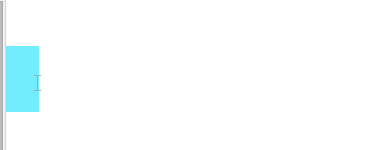

速度动画
实现思路:
每次均匀的改变left值，达到匀速的效果
效果

实现步骤
对btn元素的绑定事件
编写moveOut()函数
setInterval()方法会不停的按周期调用函数,直到clearInterval()被调用或窗口被关闭.
由setInterval()返回的ID值可用于clearInterval()方法的参数
container.offsetLeft的使用
container.offsetLeft可以获取到当前container元素的left值
真实案例